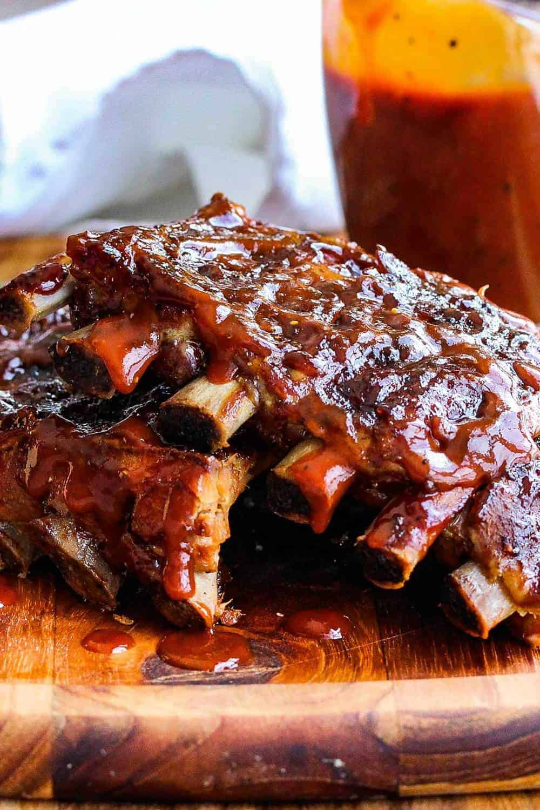

Baby Back Ribs

Description
This is a recipe for really tasty ribs, but it doesn't work
every time. All you can do is your best!
But I believe you can do it!
Ingredients
- 3 racks of baby back ribs
- Yellow Mustard
- Tasty BBQ rub
Steps
- Remove membrane from bony side of ribs (if it has one)
- Rub top and bottom of ribs with generous amount of yellow
mustard (don't worry, you can't taste it when they're done)
- Season ribs generously with BBQ rub, patting down when finished
- Let ribs sit for at least 2 hours (preferably over night)(wrap with foil if
storing in the fridge)
- Heat smoker or oven to 250 degrees F
- Put ribs on until meat starts to pull back and edges of bones are exposed
- Slather with BBQ sauce and then wrap each rack in foil
- Return to oven or grill and cook for another hour
- Enjoy!